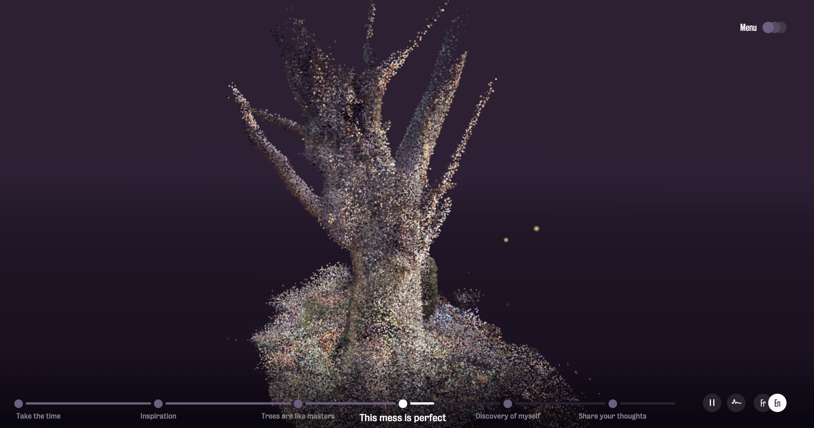

When I first launched RO.ME, i was stunned by the beatufuly transitions between videos and actual interactable code . I experiences three different stages of the dream. The first part was in the city, where I could move rows of colorful animals across the city and the buildings. Then there was a transition to a movie-like cutscene. I was then transformed into a field where i could move a herd of black bison around the field with the power of my cursor. Finally, the final "dream" includes me exploring the desert using flying birds. I was in the first person point of view, and the only way I could travel across the desert was to use my cursor to fly the birds in a certain direction. Since the demo was created in 2011, I believe this is a very revolutional website because it uses WEBGL to render the components using your machine's gpu. This has a great impact on what future websites will look like, because this gives people creativity to make their websites look more flashy and interactive.
Technology: WEBGL, 2D Graphics, video, 3D graphics, Javascript, HTML 5
 Comparison: Another story that can be compared to RO.ME is called The Azarian Journey. Link here. This story goes around a couple of trees where the French narrator describes his experiences with nature and talks about the atmosphere of forests. This is relatable to the RO.ME experience because here you can use your cursor to move the camera around the tree, and see different angles that you would not have seen before. It also has nature sounds in the background to immerse you more into the enviroment.
BONUS CONTENT:
github repo used: REPO